MDR Inrichting Monta
Inhoudsopgave
- Inleiding
- Poorten
- Chronicle Data Forwarder
- Docker
- NXLog
- Sysmon
- Windows Event Collector
- Azure Integratie
- SentinelOne Syslog
- Sophos Syslog
- Fortianalyzer Syslog
- F5 Syslog
- DNS
- IIS
- VMWare ESXi en vCenter
- DUO
- Cisco switches
- SQL Server
- Stamus Netwerk sensor
- Canary
- MontaWMS
Inleiding
Medio begin 2023 is MDR ingericht wat een SIEM/SOC oplevert bij Hunt & Hackett.
In dit document wordt de technische inrichting ervan beschreven.
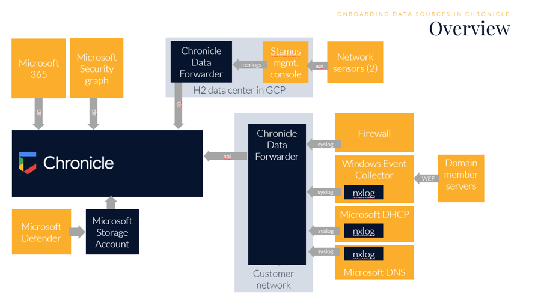
Poorten
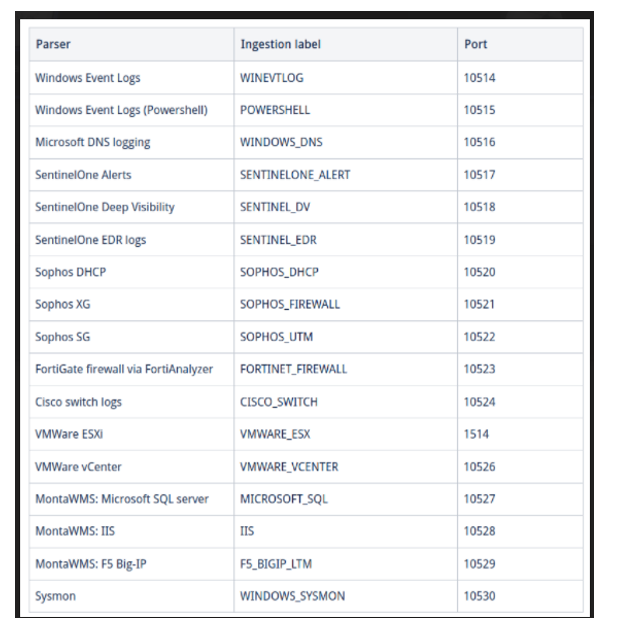
Sysmon (HA Proxy) Windows Sysmon 11530
MontaWMS Monta_Warehouse 11531
Chronicle Data Forwarder
Logging van diverse Monta-systemen wordt weggeschreven naar de Chronicle Data Forwarder die de gegevens middels een api doorstuurt naar de Chronicle SIEM.
Hiervoor zijn 2 Linux-servers aangemaakt met de namen MP-CDF01/MP-CDF02 met als OS “Ubuntu 20.04.2”.
Op de server is OpenSSL geïnstalleerd.
Op de server draait Docker.
Test of een bepaalde poort open staat op de CDF:
“Invoke-WebRequest http://193.53.249.251:10530 -TimeoutSec 1 -Method POST -Body "CDF connection test extern"”.
Dit levert in powershell een timeout op maar in Chronicle is te zien of het aankomt.
Op de MP-CDF01 draait ook HA-proxy voor het doorsturen van de data.
Met het commando "docker update --restart always h2-haproxy" is er voor gezorgd dat h2-haproxy start bij een herstart.
Middels het commando "docker ps -a" kan gekeken worden of de processen draaien.
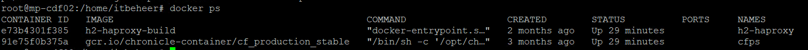
Docker
Docker Installatie
Middels het commando : “sudo docker logs -f cfps” is te zien welke files geüpload worden vanaf de CDF.
Omdat dit heel veel regels genereert uit het verleden moet je docker herinstalleren om alleen de recente regels te kunnen zien:
Ga naar /home/chronicle/config en voer de volgende commando’s uit:
docker stop cfps
docker rm cfps
./run_cdf.sh
docker logs -f cfps
Docker Updaten
docker exec -ti h2-haproxy /bin/sh
apt update
apt upgrade
apt clean
Algemene Docker commando‘s
Docker stoppen : sudo docker stop cfps
Docker starten : sudo docker start cfps
Docker herstarten : docker restart cfps\
Netwerkverkeer bekijken op een poort:
Tcpdump port 10530
NXLog
Op de meeste systemen wordt NXLog geïnstalleerd om data door te sturen.
Hierbij wordt met de cdf een connectie gemaakt op de betreffende poort.
In "C:\program files\nxlog\conf\nxlog.conf" staat de configuratie.
In "C:\program files\nxlog\conf\data\nxlog.txt" is te zien of de connectie met de cdf op de bewuste poort succesvol is.
Sysmon
Middels Sysmon worden er events aangemaakt over processen en files.
Zie voor een overzicht : https://learn.microsoft.com/en-us/sysinternals/downloads/sysmon#events
Dit kan dan weer via NXlog worden doorgestuurd.\
Tijdens het traject is gebleken dat de actie "Filedelete" bij event 23 ervoor zorgt dat van elke file die gedelete wordt er een kopie neergezet wordt in C:\Sysmon.
Hierdoor liepen de C-schijven vol van de servers en werkstations.
Daarom is er op een bepaald moment een nieuwe config gemaakt waarbij de actie bij event 23 is omgezet van "Filedelete" naar "Filedeletedetected".
Op een server is Sysmon te installeren via "\mp-fs102.montapacking.nl\software\Sysmon\Sysmon-install\1 Install sysmon.cmd".
Hierbij wordt de config gebruikt waarbij actie bij event 23 op "Filedeletedetected".
Op een server waarbij er al een directory "C:\sysmon" is dient ook "\mp-fs102.montapacking.nl\software\Sysmon\Sysmon-install\2. herstelscript_as_Admin.ps1" gedraaid te worden waarbij de rechten op C:\sysmon meer open gezet worden zodat met treesize bestanden verwijderd kunnen worden.
Soms werkt dit script niet. Gebruik dan de handleiding "\mp-fs102.montapacking.nl\software\Sysmon_Sysmon herstellen op de servers".
Verder is gebleken dat de events 23 en 26 (beide met de actie "Filedeletedetected") voor opstartproblemen kunnen zorgen bij servers.
Daarom wordt middels de GPO "GP - Server Services" het opstarten van de service op "delayed" gezet.
Op servers wordt vanaf 30-6-2023 alleen nog een config zonder de events 23 en 26 toegepast.\
In powershell vanaf C:\windows kan met het commando "sysmon64.exe -c | Out-File c:\scripts\resultaat.txt" en text-file gemaakt worden waarin de actieve config bekeken kan worden.
Afhankelijk van de installatie kan het ook sysmon.exe zijn, en als C:\scripts niet bestaat kun je een andere directory gebruiken
Voor desktops en laptops wordt sysmon middels "Intune" geïnstalleerd.
Sysmon grondig deinstalleren : sysmon -u force
Windows Event Collector
Eventcollector instellen
De server MP-WEC01 (Windows Server 2019) is beschikbaar als Windows Event Collector.
De inrichting is uitgevoerd volgens : PE-WindowsEventLogs-230123-1245.pdf
Op de MP-WEC01 is het volgende uitgevoerd :
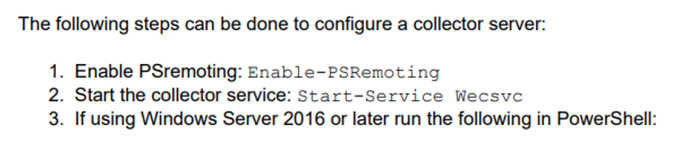
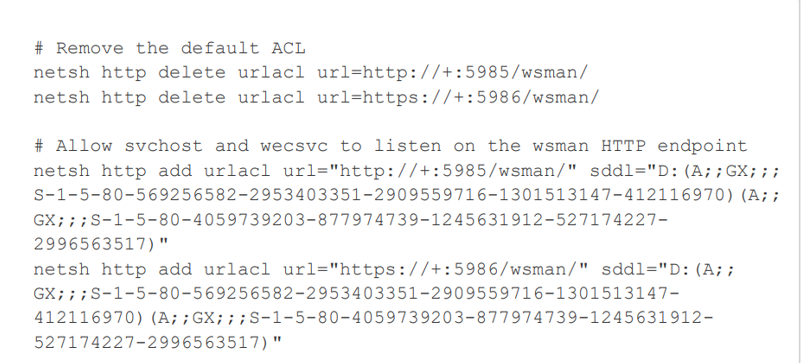
Vervolgens is op de MP-WEC01 binnen de Eventviewer de volgende subscription aangemaakt.
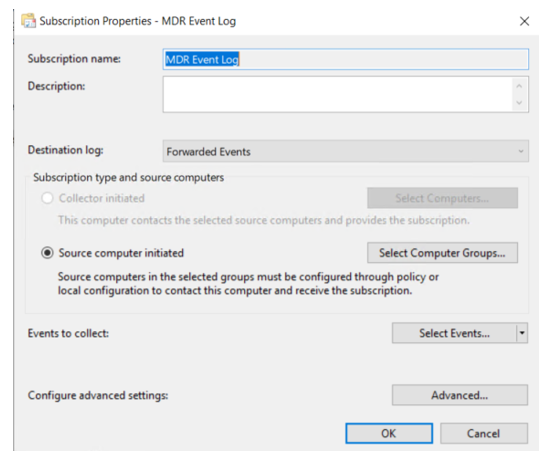
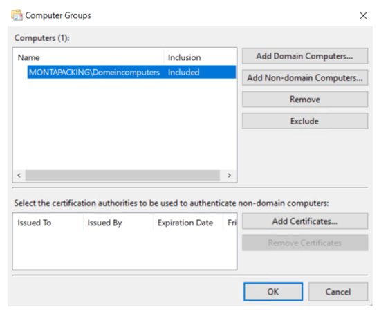
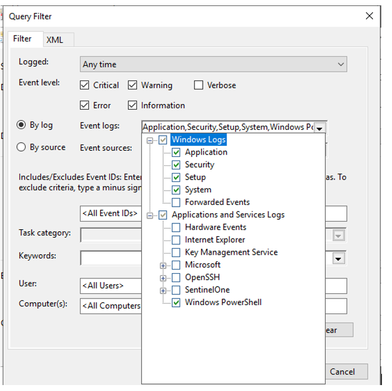
Om er voor te zorgen dat WinRM op HTTPS WS-Man requests gaat accepteren moet het volgende commando uitgevoerd worden : “winrm quickconfig -transport:https”.
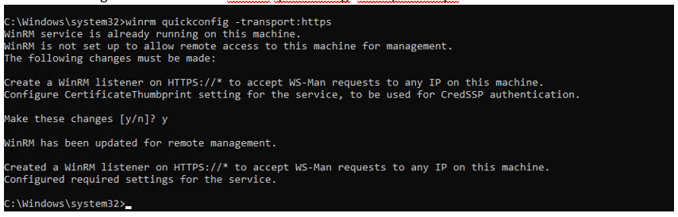
Daarna is bij het volgende commando “winrm enumerate winrm/config/listener” een certificaat-thumbprint te zien.
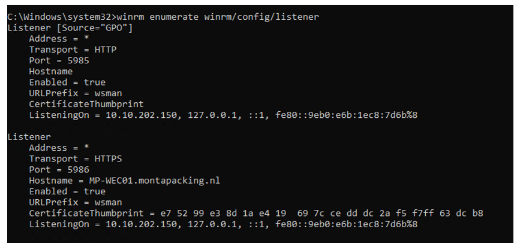
Met het commando “netsh http show urlacl” zijn de poorten 5985 en 6986 te zien, met de waarden die middels de GPO zijn ingesteld.
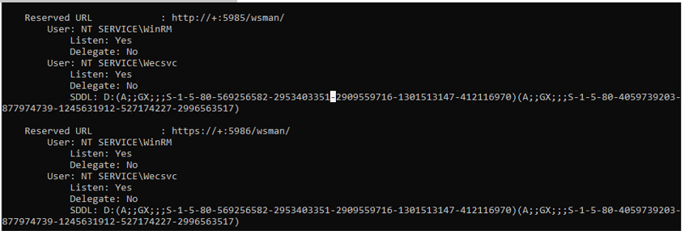
Daarna zijn de volgende commando’s uitgevoerd:
• enable-psremoting
• winrm e winrm/config/listener
• Test-NetConnection -Port 5985 -ComputerName mp-wec01.montapacking.nl
(dit is alleen maar een controle of alle instellingen goed geconfigureerd zijn)
• winrm enum winrm/config/listener
• winrm qc -q
• wecutil qc /q
NXLog
Op de MP-WEC01 is een speciale configuratie van NXlog ingesteld.
define WINEVTLOG_OUTPUT_DESTINATION_ADDRESS 10.10.202.24
define WINEVTLOG_OUTPUT_DESTINATION_PORT 10514
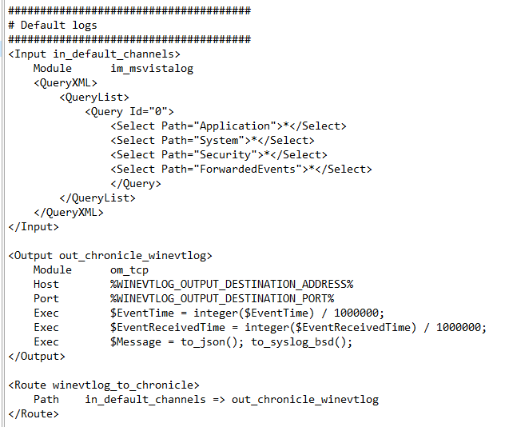
Path in_default_channels => out_chronicle_winevtlog
Op de MP-DC03 en MP-DC04 is ook een speciale configuratie gemaakt. Omdat deze servers geen lokale groepen hennen kan het lidmaatschap van de "Event Log readers" niet ingesteld worden. Daarom is in NXLOG het volgende toegevoegd :
define WINEVTLOG_OUTPUT_DESTINATION_ADDRESS 10.10.202.24 define WINEVTLOG_OUTPUT_DESTINATION_PORT 10514
define POWERSHELL_OUTPUT_DESTINATION_ADDRESS 10.10.202.24 define POWERSHELL_OUTPUT_DESTINATION_PORT 10515
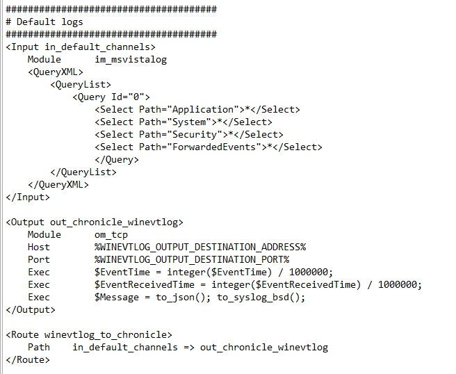 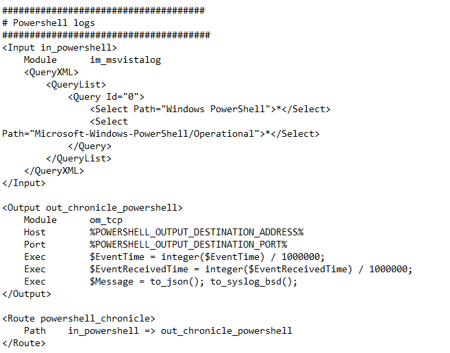
Servers instellen
Om er voor te zorgen dat alle servers de events naar de MP-WEB01 sturen dient de volgende GPO gemaakt te worden.
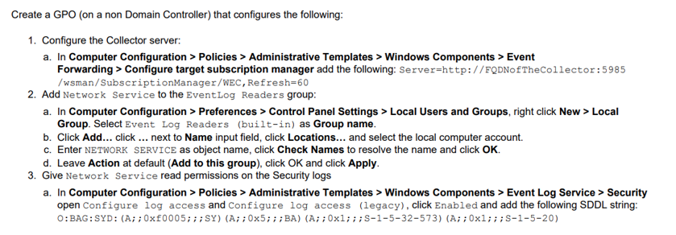
Toubleshooting Event collector
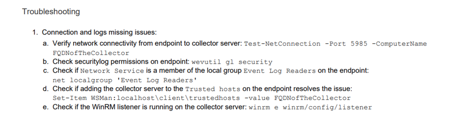
1a Test-NetConnection -Port 5985 -ComputerName mp-wec01.montapacking.nl
Vanaf de MP-TEST03 geeft dit resultaat:
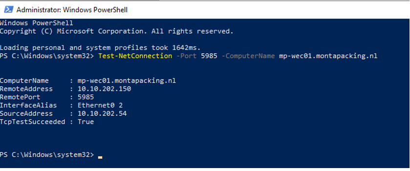
Zie ook : https://docs.huntandhackett.com/mdr/windows-event-logs#WindowsEventLogs-Troubleshooting
Azure Integratie
In Azure is een script uitgevoerd waardoor de logging direct naar Chronicle geschreven kan worden.
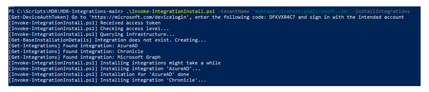
Dit levert het volgende account op.
HuntandHackettMDRSA-AzureAD
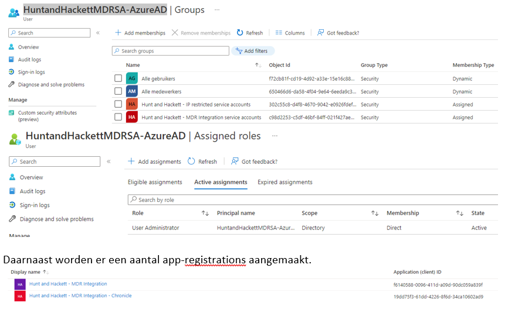
SentinelOne Syslog
Binnen SentinelOne is bij integraties een Syslog-server ingesteld.
Onderstaande instellingen geeft nog niet het verwachte test-resultaat :
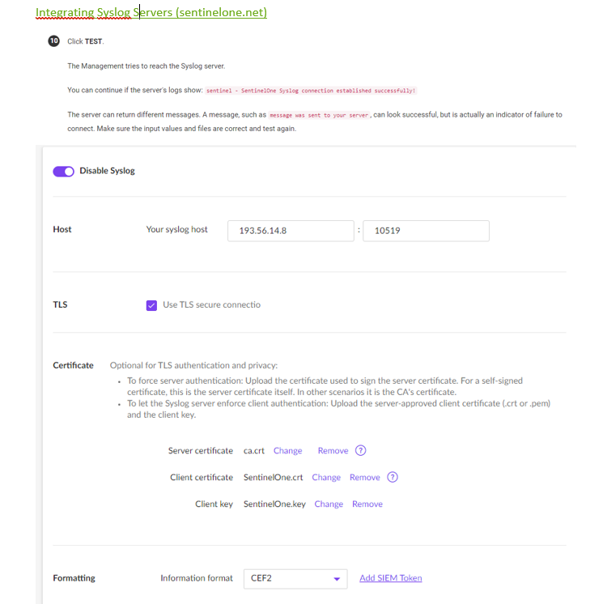
Er zijn 3 NAT-rules aangemaakt, TCP, UDP en beide:
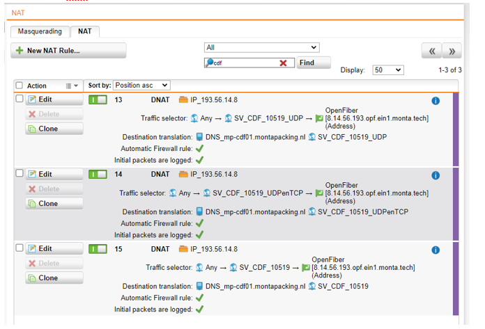
Dat levert de volgende 3 Firewall-rules.
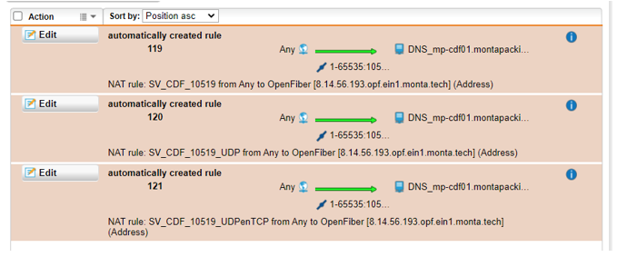
In de Firewall-log van de dc-rou01 is het volgende verkeer te zien.
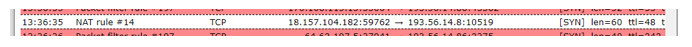
Het cloud-dashboard heeft een soortgelijk IP-nr
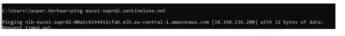
Voor Hunt en Hacket is er een SentinelOne account aangemaakt met een aangepaste rol H2-SOC. Deze is gebaseerd op de rol "SOC" met de volgende aanpassing: 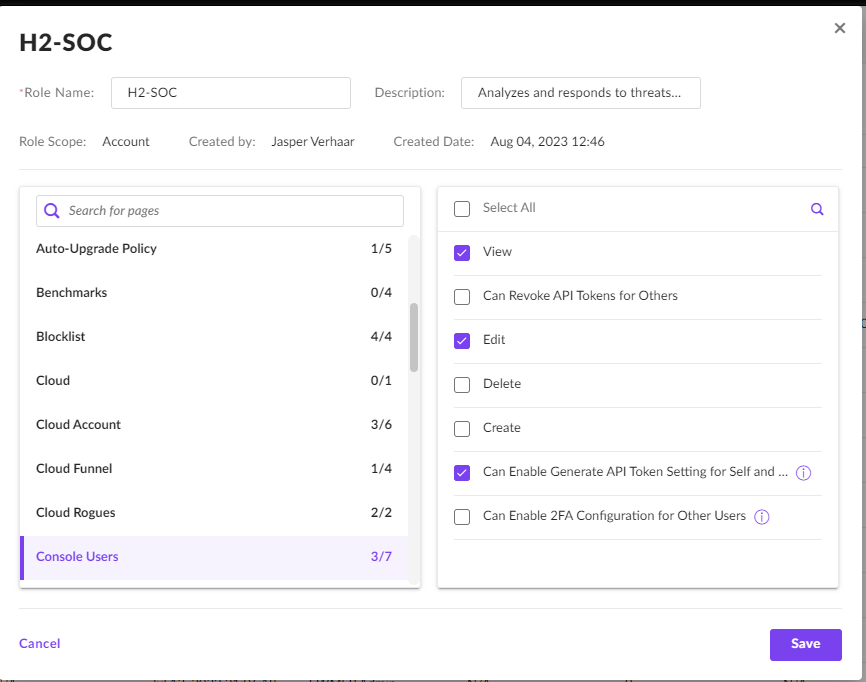
Hierdoor is het voor Hunt en Hackett mogelijk om een API token te generen als ze inloggen met onderstaand account.
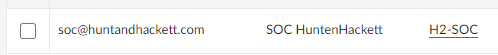
Met dit API token kan met het genoemde account connectie gemaakt worden met de SentinelOne omgeving van Monta.
Dit is zowel nodig om de threats doorgestuurd te krijgen naar Hunt en Hackett als om acties uit te voeren in de SentinelOne omgeving.
Dit API token moet elk half jaar opnieuw aangemaakt worden.
Sophos Syslog
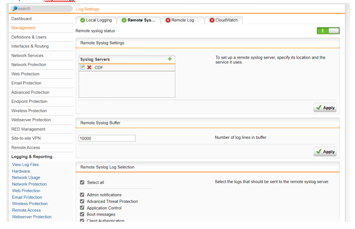
Fortianalyzer Syslog
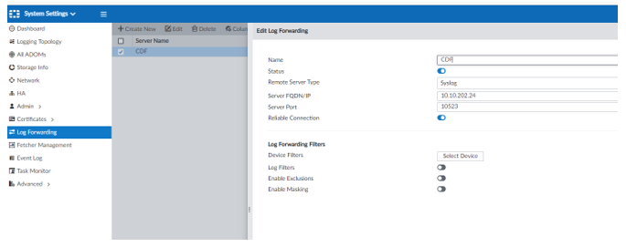
F5 Syslog
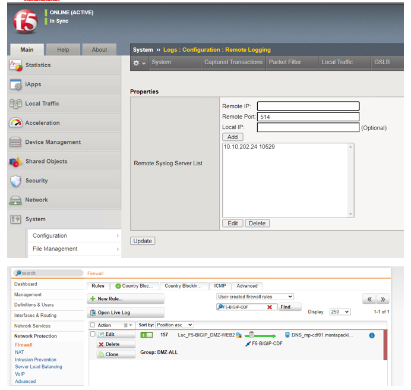
De volgende firewall-rule is aangemaakt.
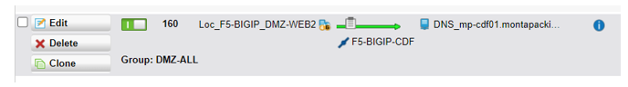
DNS
Zie ook het bestand : "Monta Services BV\Serviceteam - IT Operations - Documenten\Operations\Servers\MDR\PE-DNS en DHCP 472154116-230123-1315.pdf"
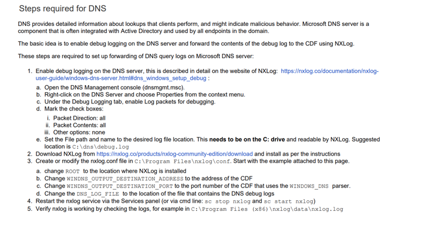
IIS
Zie ook bestand : "Monta Services BV\Serviceteam - IT Operations - Documenten\Operations\Servers\MDR\PE-MicrosoftIIS-230123-1443.pdf"
Daarnaast moet als extra field “X-Forwarded-For” aangemaakt worden volgens "How to use X-Forwarded-For header to log actual client IP address?" (https://techcommunity.microsoft.com/t5/iis-support-blog/how-to-use-x-forwarded-for-header-to-log-actual-client-ip/ba-p/873115)
VMWare ESXi en vCenter
Zie ook bestand : "Monta Services BV\Serviceteam - IT Operations - Documenten\Operations\Servers\MDR\PE-VMWare ESXi vCenter 473235462-230123-1418.pdf"
Log in op de ESXi zelf dus bijvoorbeeld voor de EIN-ESX05 inloggen op https://10.10.100.120/ Vul bij de remote syslog location “tcp://10.10.202.24:1514” in.
Bij Vcenter log in op : https://mp-vcenter21.montapacking.nl:5480/#/ui/logging
Onderstaande firewall rule aangemaakt omdat de ESX-systemen en Vcenter in het Management-LAN zitten.
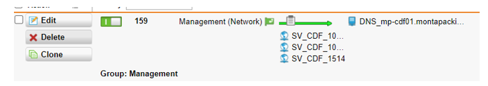
DUO
Zie ook bestand : "Monta Services BV\Serviceteam - IT Operations - Documenten\Operations\Servers\MDR\PE-DUO-230123-1416.pdf" Daarnaast is er binnen DUO een allowlist ingevoerd met IP-nummers van Google Chronicle.
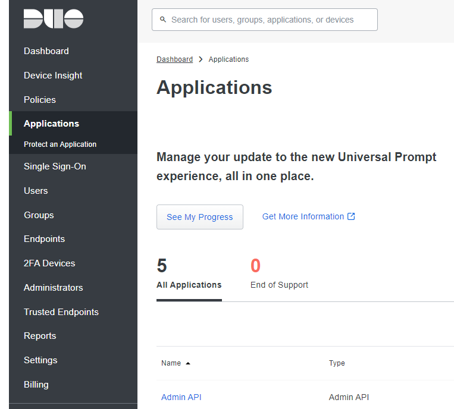
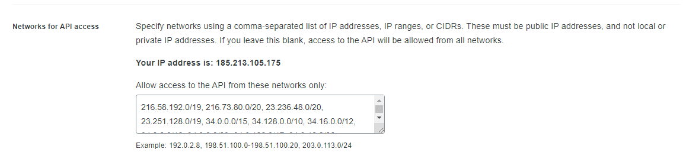
Zie het bestand : "Monta Services BV\Serviceteam - IT Operations - Documenten\Operations\Servers\MDR\Allowlist DUO.txt
Cisco switches
Zie ook bestand : "Monta Services BV\Serviceteam - IT Operations - Documenten\Operations\Servers\MDR\PE-Cisco switches 512163905-230123-1415.pdf"
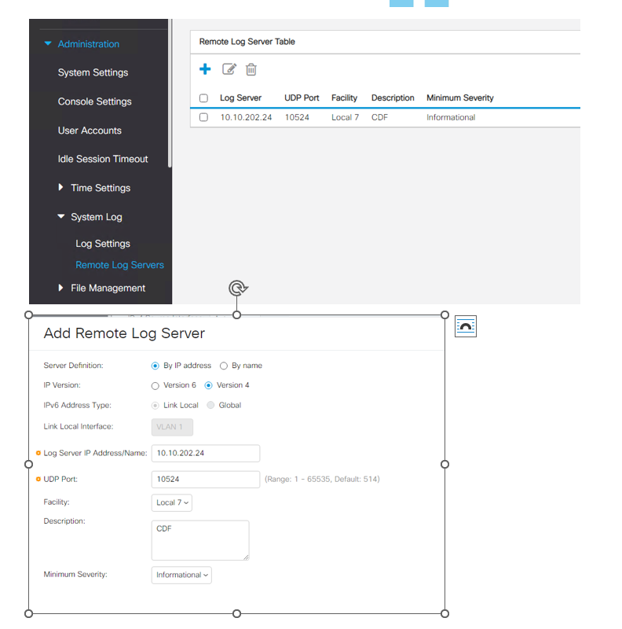
SQL Server
Auditing
De website pentest.montaportal.nl is aangesloten op “AGTSTLISTENER\BACKENDTEST\Monta_backend”. Dit is het SQL-Enterprise-testcluster waarvan de servers MP-SQLTEST01 02 en 03 deel uit maken. Onder “Security \ Audits” is als “Audit destination” de “Apploication Log” ingesteld, waarna deze enabled is.
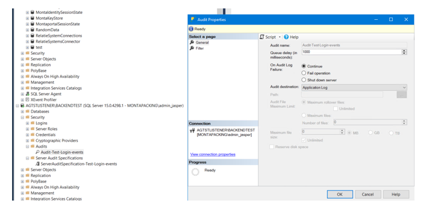
Onder “Security \ Server Audit Specifications” is een specificatie aangemaakt en enabled.
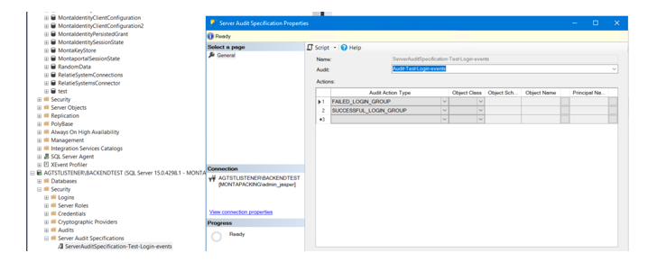
Hierin zijn Logins opgenomen.
Stel dat er met onjuiste credentials in gelogd wordt op de SQL Server dan komen hiervan events in de application log.
Middels EXEC sp_readerrorlog 0, 1, 'Login failed' is dat in de database te zien.
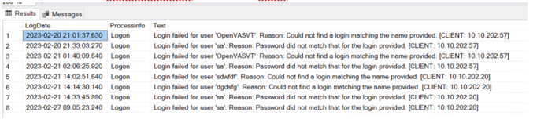
In de application log is dat ook terug te vinden.
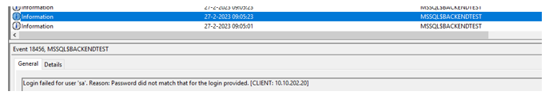
Op de servers is NXLOG geïnstalleerd waarbij in de config onderstaande regel belangrijk is.
Door Paul van Oordt is er een script gemaakt om nog veel meer te loggen.
Op een server waar nog niets is aangemaakt dient het script “Monta Services BV\Monta - Serviceteam - IT Operations - Documenten\Operations\Servers\MDR\Scripts SQL\audit update volledige aanmaak.sql” gedraaid te worden. Dit script bevat de volgende 6 stappen”:
- database audits stoppen
- server audit stoppen
- database audits verwijderen
- server audit verwijderen
- server audit aanmaken
- server audit sepcificatie aanmaken
Op de overige 2 servers van het cluster dient het script “Monta Services BV\Monta - Serviceteam - IT Operations - Documenten\Operations\Servers\MDR\Scripts SQL\audit update allen voor overige servers in cluster.sql” gedraaid te worden. Dit bevat alleen de stappen 5 en 6.
De “Database Audit specification” op de inactieve node moet nog gekoppeld worden aan de audit.
Regel dit als volgt:
Schakel SQL over naar de niet actieve node, bijv. de MP-SQLTest02.
Disable de “ChronicleDatabaseAuditSpecification_Monta_Backend”
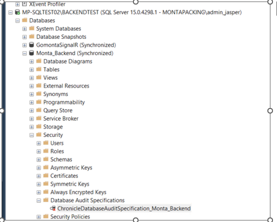
Kies als Audit “ChronicleAudit”
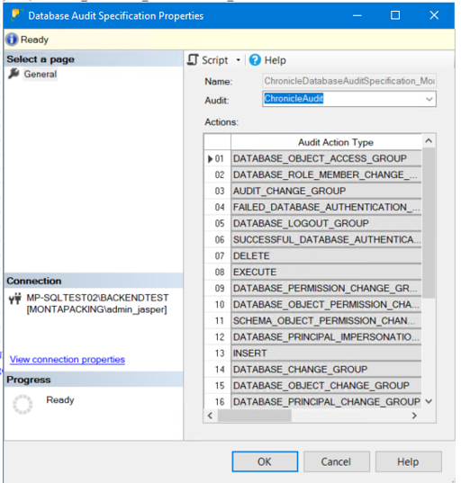
Enable de “ChronicleDatabaseAuditSpecification_Monta_Backend” weer.
Check of de query SELECT TOP 3 * FROM tbleorder; in de application log terecht komt.
Sysmon SQL
Op alle SQL servers is sysmon geïnstalleerd via “\mp-fs102.montapacking.nl\software\ Sysmon\Sysmon-install\Install sysmon.cmd”.
Dit resulteert in een service sysmon64.
Deze genereert weer extra logging in de eventlog “Microsoft-Windows-Sysmon/Operational”
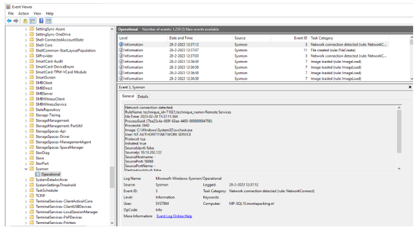
Dit wordt dan weer met nxlog doorgestuurd naar de cdf.
NXlog SQL
Via \mp-fs102.montapacking.nl\software\ NXLog\nxlog-ce-3.1.2319.msi kan nxlog geïnstalleerd worden.
Vervolgens moet in “C:\Program Files\nxlog\conf” het bestand “nxlog.conf” vervangen door de inhoud van “nxlog SQL en sysmon.conf”.
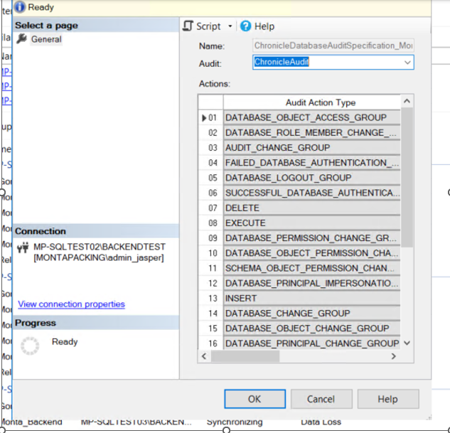
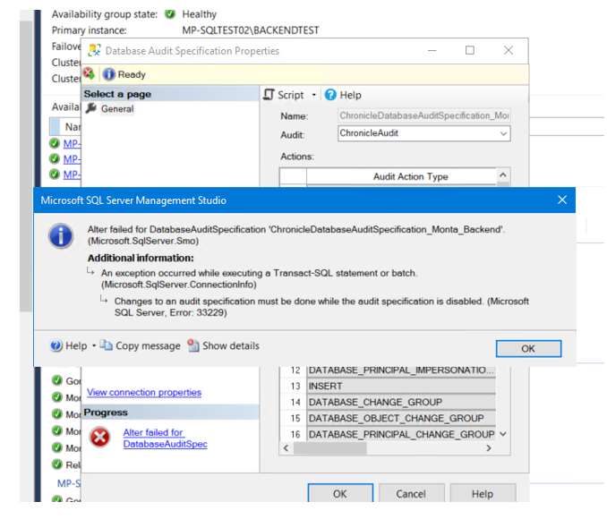
Linux install S1 op CDF-servers
Installing the Linux Agent (https://euce1-swprd2.sentinelone.net/docs/en/installing-the-linux-agent.html)
- sudo dpkg -i SentinelAgent-Linux-22-2-2-2-x86-64-release-22-2-2_linux_v22_2_2_2.deb
- sudo /opt/sentinelone/bin/sentinelctl management token set eyJ1cmwiOiAiaHR0cHM6Ly9ldWNlMS1zd3ByZDIuc2VudGluZWxvbmUubmV0IiwgInNpdGVfa2V5IjogImY2NGEzMGEzNDIyNDczMTIifQ==
- Check SELinux : SEStatus Geen resultaat betekent dat het niet draait en dan kan de stap download and run the policy script from Configuring SELinux. Overgeslagen worden.
- sudo /opt/sentinelone/bin/sentinelctl control start
- sudo /opt/sentinelone/bin/sentinelctl version
Stamus Netwerk sensor
Zie de documentatie in : ”Monta Services BV\Team - Monta Aspect ICT - Documenten\General\Stamus Netwerk sensor”.
MP-STA02 commando’s
journalctl -f lopende activiteiten bekijken
systemctl restart openvpn.service
systemctl -a | grep vpn zoeken naar een service met vpn in de naam
systemctl -a overzicht alle draaiende services
sudo stamus_vpn_register ./vpn-conf-mp-sta01.tar.gz installatie vpn connector
stamus_config Configuratietool stamus.
Verkeer bekijken : tcpdump -nel -c 50 not port 22 -i eth1
Zie een schets van de situatie die als laatste gemaakt is:
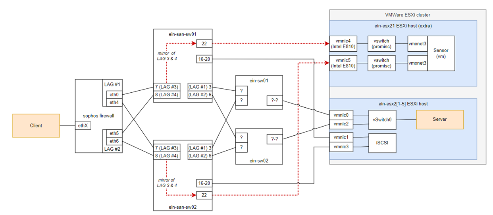
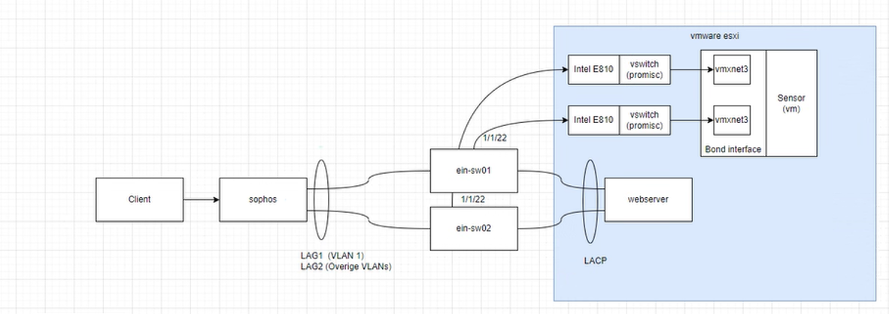
Canary
Er zijn 2 honeypots geïnstalleerd.
Deze zijn van het merk Canary
https://canary.tools
http://help.canary.tools\
De MP-RDS10 is VM in het datacenter.
Er is ook een fysieke honeypot aangesloten in de patchruimte van Papland 16.
Daarnaast zijn er in sharepoint nog een aantal bestanden geplaatst.
Op termijn wordt er ook nog niets met websites gemaakt.
MontaWMS
Voor belangrijke Monta-websites wordt er logging weggeschreven op servers die middels NXLog wordt doorgestuurd naar de CDF en Chronicle.
Omdat dit geen standaard output betreft heeft Chronicle hiervoor geen standaard parsing aan boord.
De parsing is door Hunt en Hackett gemaakt. Vervolgens heeft Hunt en Hackett regels hierop gemaakt zoals "veel onjuiste inlogs gevolgd door een goede inlog".
Montaportal
Op de MP-WEB32x wordt in F:\Logs\montaportal.nl de logging weggescheven.
De eventid's staan in: https://dev.azure.com/MontaDevelopment/Montapacking/_wiki/wikis/Montapacking.wiki/681/Logging
Rest.monta,nl (interne rest)
In de directories "\mp-fs106\appdata$\Logs\rest.monta.nl-v0" en "\mp-fs106\appdata$\Logs\rest.monta.nl-v1" wordt de logging weggeschreven.
De eventid's staan in :
https://dev.azure.com/MontaDevelopment/Montapacking/_wiki/wikis/Montapacking.wiki/704/Logging
Identity
Op de MP-WEB34x wordt in F:\Logs\montaportal.nl de logging weggescheven.
De eventid's staan in : https://dev.azure.com/MontaDevelopment/Montapacking/_wiki/wikis/Montapacking.wiki/768/Logging
Api.monta.nl (externe API)
Medio juni 2023 moet dit nog gemaakt worden.